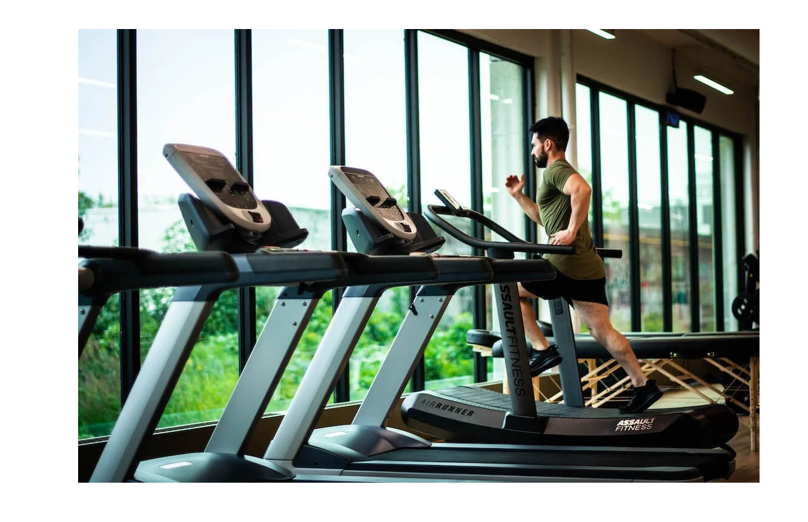
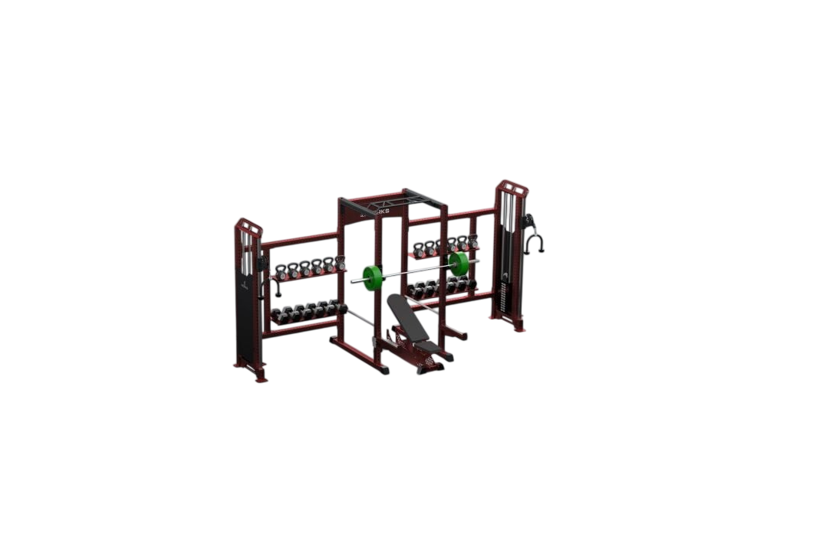
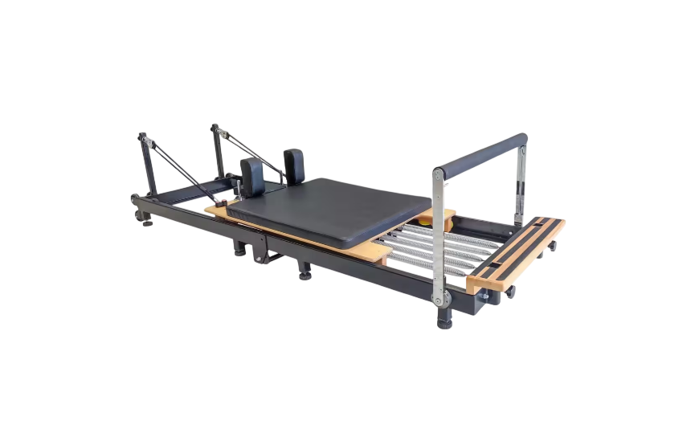
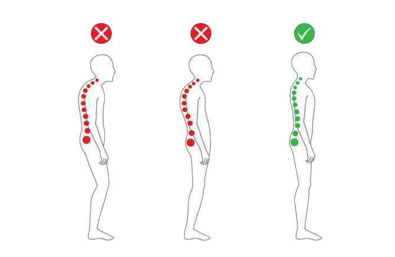
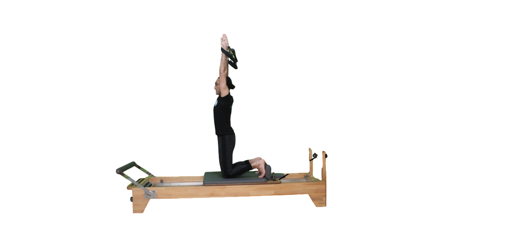
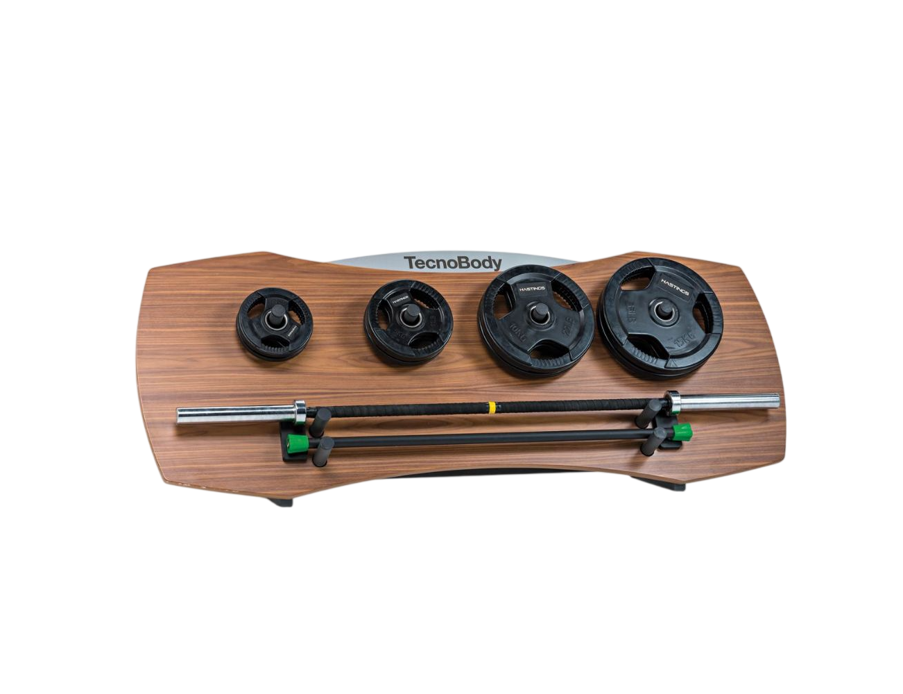

Spor ve Sağlık Alanlarımız
Küçükçekmece Gençlik Merkezi'nde her branş, uzman eğitmenler ve profesyonel ekipmanlarla kendine özel ayrılmış alanlarda sunulmaktadır.
Fitness Alanı

Kardiyo ve Kondisyon
Koşu bandı, bisiklet ve eliptik araçlarla kalp sağlığınızı korurken dayanıklılığınızı artırın.
Yağ Yakımı Kondisyon Dayanıklılık
Serbest Ağırlık ve İstasyonlar
Kas kütlesini artırmaya yönelik modern ağırlık makineleri ve serbest ağırlık ekipmanları.
Kas Gelişimi Güç Vücut ŞekillendirmeAletli Pilates Alanı

Klasik Aletli Pilates
Vücut esnekliğini artırmak ve merkez bölge kaslarını güçlendirmek için uygulanan temel aletli metotlar.
Esneklik Core Gücü Denge
Postür ve Omurga Sağlığı
Masa başı çalışan gençler için duruş bozukluklarını gideren özel pilates egzersizleri.
Duruş Düzeltme Ağrı Giderme MobilitiReformer Alanı

Reformer Başlangıç ve İleri Seviye
Reformer cihazı üzerindeki yay dirençleri ile kasları uzatarak güçlendiren, vücudu sıkılaştıran profesyonel çalışma.
Yay Direnci Sıkılaşma İleri Seviye Kontrol
Cihaz Odaklı Fonksiyonel Hareket
Reformer mekanizmasının sağladığı destekle, eklemlere yük bindirmeden yapılan derinlemesine kas aktivasyonu.
Düşük Darbe Fonksiyonel Güç Koordinasyon